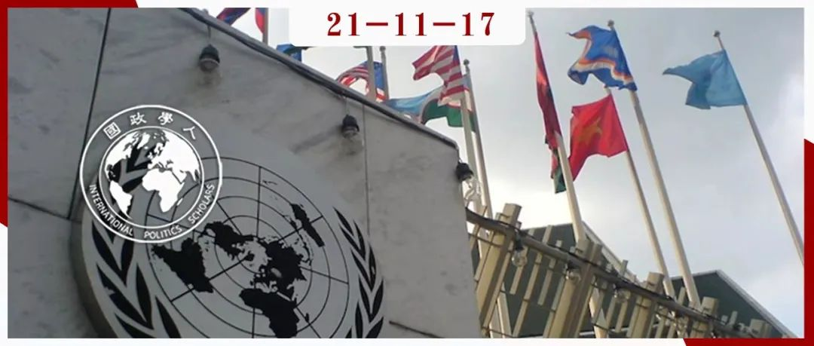
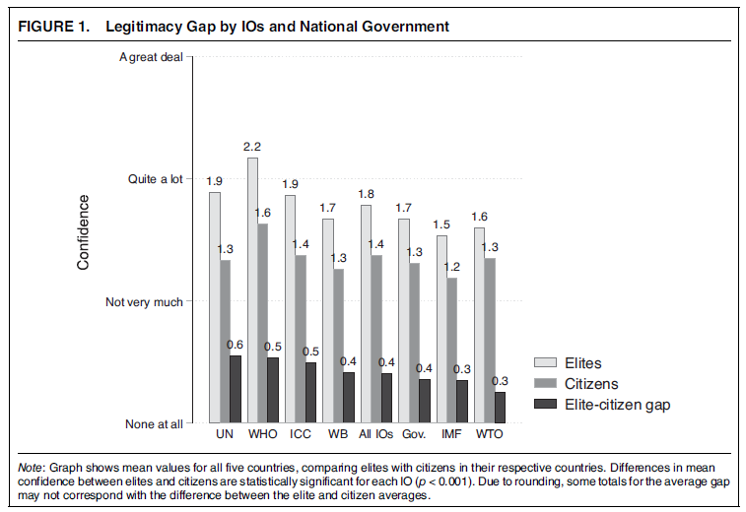
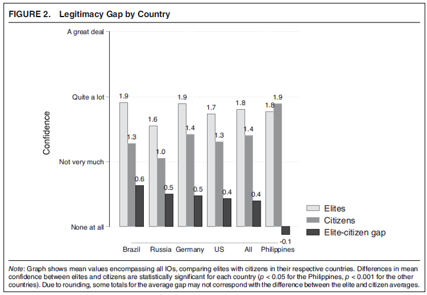
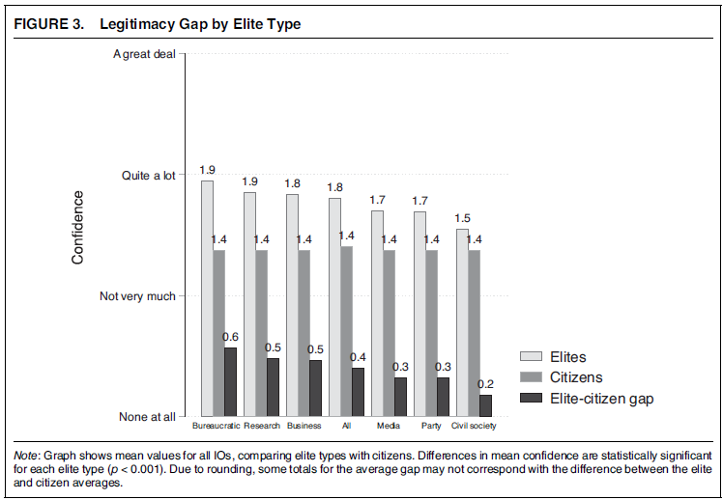
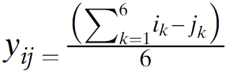
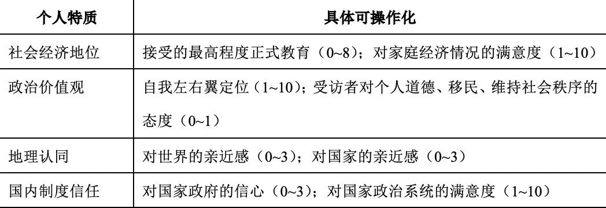
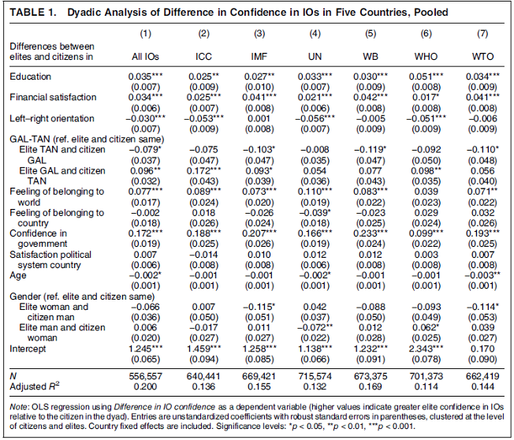
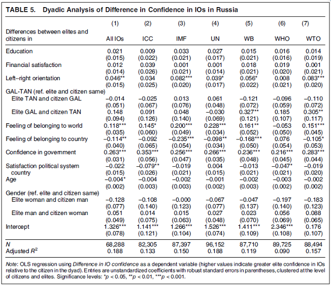
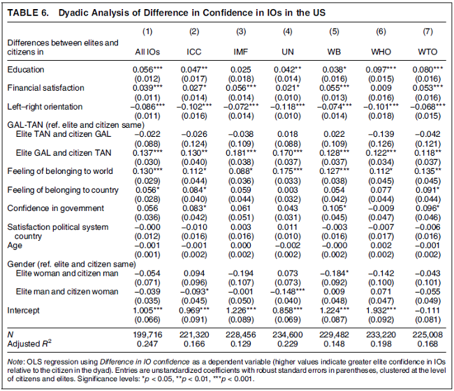

收录于合集 #《国际关系前沿》2021年第11期 18个

作品简介
作者： Lisa Dellmuth，斯德哥尔摩大学助理教授，主要关注国际组织的政治经济学，尤其是援助、合法性、环境政治和治理；Jan Aart Scholte，莱顿大学教授，研究兴趣包括全球化与社会变革、多中心治理、全球治理中的合法性、网络治理等；Jonas Tallberg，斯德哥尔摩大学政治学教授，主要研究兴趣为全球治理与欧盟政治；Soetkin Verhaegen，马斯特里赫特大学助理教授，研究兴趣包括欧洲身份认同、青年、社会化、政治参与和精英。
编译： 张鸿儒（国政学人编译员，山东大学英语与国际政治专业）
来源： Dellmuth, L., Scholte, J. A., Tallberg, J., & Verhaegen, S. (2021). The elite–citizen gap in international organization legitimacy. American Political Science Review , 1-18.
归档： 《国际关系前沿》2021年第11期，总第38期。

内容摘要
精英和民众是否对国际组织的合法性持有不同的看法？就此问题，学者与政策制定者存在着争论。到目前为止，有限的数据限制了我们明确精英和民众看法的差距，也限制了我们提出能够解释上述差距的理论。本文首次系统地比较了精英和民众对国际组织合法性的看法，具体检验了巴西、德国、菲律宾、俄罗斯及美国五个国家中精英和民众对六个关键国际组织的合法性信念。本文发现： 精英和民众对国际组织合法性的看法均存在显著的差距 ，这种差距存在于六个国际组织、五个国家中的四个和所有类型的精英-民众对（elite-citizen dyad）中。本文作者提出了一个分析合法性信念的个人层次路径，认为精英与民众间的差距源于两方在国际组织态度相关特质上的深层个人差异。民众可能会成为民主和有效国际合作面临的主要挑战。
文章导读
精英和民众（citizen）是否对国际组织的合法性有不同看法？如是，原因为何？针对上述主题，学界已有丰富的研究。但上述研究在数据和理论上都非常有限，未能提出缜密的解释。本文首次对精英和民众对国际组织合法性的看法（即精英和民众在多大程度上认同一个国际组织的权威）进行了系统比较分析，数据来源为2017年至2019年进行的第七轮世界价值观调查（WVS7）和作者针对巴西、德国、菲律宾、俄罗斯及美国五国精英的调查。在理论上， 本文提出了解释精英和民众对国际组织合法性看法差距（以下简称精英-民众差距）的个人层次路径，具体关注精英和民众在社会经济地位（socioeconomic status）、政治价值观（political values）、地理认同（geographical identification）和国内制度信任（domestic institutional trust）四个特质上的差异如何带来双方对国际组织合法性的不同看法。
01
是否存在国际组织合法性信念的精英-民众差距？
为了评估国际组织合法性中的精英- 民众差距，本文对作为研究对象的国际组织和国家进行了细致的选择。在选择过程中，样本的多样性是一个重要考虑因素。就国际组织而言，本文关注国际刑事法院、国际货币基金组织、联合国、世界银行、世界卫生组织和世界贸易组织六大组织。上述组织治理不同的政策领域，有着不同的中心制度特征。此外，上述六大组织都是在各自政策领域有着全球影响力的国际组织，这一方面有利于研究进行跨国家的比较，另一方面也为研究增添了现实政治意义。就国家而言，本文选择了巴西、德国、菲律宾、俄罗斯和美国五个国家。上述五国在经济发展、政治体制、主要接触的国际组织及与其交集（如接受IMF贷款、逃避国际刑事法院起诉等）上展现出了多样性。
本文使用第七轮世界价值观调查数据衡量民众对国际组织合法性的看法，使用自行开展的LegGov精英调查数据来衡量精英对国际组织合法性的看法。在受访者的选择中，前者使用了随机概率抽样（random probability sampling）方法，巴西、德国、菲律宾、俄罗斯和美国受访人数分别为1762人、1528人、1200人、1810人和2596人。后者则使用了配额抽样（quota sampling）方法，采访了六类总计599位政治及社会精英。本文使用受访者对国际组织的信心来衡量其对国际组织合法性的看法，共分为四个层次的指标：没有一点信心（0）；不是很有信心（1）；相当有信心（2）；非常有信心（3）。具体结果如下图所示。

图1 国际组织合法性的精英-民众差距
（对六个国际组织与国家政府）
图1展示了精英和民众对六个国际组织合法性看法的差距，同时加入了精英和民众对本国政府合法性的看法作为参照项。可以发现，民众对六个国际组织的平均信心指数为1.4，而精英对上述组织的平均信心指数为1.8，双方差距为0.4。精英- 民众差距对本项研究中的每一个国际组织和国家政府都是显著的。

图2 国际组织合法性的精英-民众差距（按国家）
图2展示了五个国家中精英和民众对国际组织合法性的看法差距。精英- 民众差距最大的是巴西（0.6），最小的为菲律宾（-0.1）。存在菲律宾这一特例的原因在于相较于精英，菲律宾民众对经济类国际组织持有更积极的看法，对安全类国际组织有着与精英相近的看法。

图3 国际组织合法性的精英-民众差距（按精英类型）
图3展示了不同精英类型对应着的精英-民众差距。不管是哪一类型精英，精英和民众对国际组织的平均信心差距都具有统计上的显著性。
02
对差距的解释：一种个人层次的路径
精英和民众对国际组织的信心存在差距并非奇事。 但有待回答的问题是：为何在精英眼中，国际组织往往更具有合法性？ 对于这一问题，有学者提出三个解释的出发点：个人、组织和社会结构。个人层次解释将合法性信念归因于持有这一信念的个人，如利益计算、政治价值观以及身份建构等。组织层次解释认为合法性信念源于治理机构的特征，如机构的目标、程序和表现等。社会层次解释则认为合法性信念来源于更广泛社会秩序的特质，如文化规范、经济系统和政治体制等。本文使用的为个人层次路径。
本文认为，精英和民众由有着系统性特质差异的个体组成，个体特质的差异会影响到对国际组织的态度，进而带来观察到的合法性信念差距。本文具体关注以下四类理论上互补的个人特质：社会经济地位、政治价值观、地理认同与国内制度信任。但鉴于其他理论可能会比本文主张更具说服力，本文也考虑了年龄、性别、社会信任、政治知识等替代性解释。
精英和民众的构成特质差异源于先前的选择（selection）与社会化（socialization）过程。 例如，就选择而言，有着更强社会经济地位和对现有政府制度更信任的人，更有可能在政治和社会中寻求和获得精英的角色。同样，就社会化而言，位于精英位置的人更有可能发展出自由主义政治价值观和全球认同。上述过程的叠加，使得精英得以区别于民众，进而影响了其对国际组织的态度。
在将个人确定为研究的出发点时，本文并不否认组织和社会条件对合法性信念的影响。首先，对个人特质的关注需要将更宽泛的过程考虑在内。其次，个人层次的解释可能会因为组织和社会背景的不同而有所不同。因而，在阐释调查结果时，本文讨论了国际组织和国家的具体情况对个人层次解释路径的可能影响。
需要特别指出，个人层次解释路径具有局限性。 政治无法被还原至个人，制度和结构具有各自的独特力量。个人层次的分析可以为合法性信念提供实质性和重要的洞见，但它无法提供完整的解释。
（一）社会经济地位
本文第一个预期假设认为精英与民众间社会经济地位的差异使得双方对国际组织的合法性信念存在差距。支撑着这一假设的相关研究强调功利计算和人们在经济中的地位对国际事务中观念形成的重要作用。机构及其政策会对受影响各方产生不平衡的经济影响，进而带来各方对贸易、投资、移民等议题的不同态度。
在此基础上，本文指出：精英和民众的差异使得双方从国际组织获得的物质利益不同，这有助于解释双方对国际组织合法性信念的差异。精英往往在经济全球化中受益更多，而这种全球化是由国际组织所反映并推动的。本文第一项假设如下：
H1：与普通民众相比，精英的社会经济地位越高，其对国际组织合法性的看法就越正面。
（二）政治价值观
本文第二个预期假设认为精英和民众对国际组织合法性信念的差距反映了双方不同的政治价值观。支撑这一假设的相关研究认为政治意识形态影响人们对国际事务的态度，围绕着国际议题产生的争议往往伴随着价值观的冲突。大体存在两类价值观的冲突：一类为左翼价值观与右翼价值观的冲突，一类为绿色、另类、自由（GAL）价值观与传统、威权、民族主义（TAN）价值观间的冲突。在当代显著议题上，后一类往往更具有解释力。
在此基础上，本文提出：精英和民众在价值观上的差异有助于解释对国际组织合法性的不同感知。近年来民众愈发倾向于反全球主义意识形态，对国际组织持有怀疑看法；精英则总体而言处于更倾向于国际组织的意识形态立场。本文第二项假设如下：
H2：相较于民众，精英越持有左翼或绿色、另类、自由政治价值观，其对国际组织合法性的看法就越正面。
（三）地理认同
本文第三个预期假设认为精英和民众对国际组织的合法性信念差距源于二者对自己所属地理范围的不同感知。支撑这一假设的相关研究将身份认同乃至地理认同视为人们对国际议题及国际制度态度的来源。具体来讲，拥有全球认同的个人更有可能对全球治理持有正面看法，而对各自国家更亲近的个人就没有那么重视国际组织，甚至将其视为对国家认同和自主性的威胁。
在此基础上，本文提出：相对于民众，精英普遍更多持有全球认同，这很大程度上可以解释民众和精英对国际组织合法性信念的差距。精英多位于领导地位，因而往往获得更多接触全球的机会。此外，身处当今的全球化时代，对全球地理范围更有认同的人往往更容易在各个领域获得精英位置。本文第三项假设如下：
H3：相较于民众，精英越持有全球范围上的认同，其对国际组织合法性的看法就越正面。
（四）国内制度信任
本文第四个预期假设为人们对国内政治制度不同程度的信任可以解释精英和民众对国际组织合法性信念的差距。支撑这一假设的研究强调国内层面与国际层面的关联，并提出了三种解释上述关联的机制：启发式（heuristic，大多数人将自己对国内政治制度的评估作为理解国际组织的捷径）、总体信任（generalized trust）与一国政府在国际组织中的作用。
在此基础上，本文提出：精英在一国政治和社会中多处于有利位置，因而相对于民众会对国内政治制度持更正面的看法。这一看法可延伸至对国际组织的态度中。本文第四项假设如下：
H4：相较于民众，精英对国内政治制度越信任，越会对国际组织的合法性持正面看法。
03
实证分析
（一）模型设定与可操作化
本文使用了二元建模策略（dyadic modeling strategy），将每一位精英受访者与该国所有民众受访者进行匹配。借助这一方式，本文检验了同一精英-民众对（elite-citizen dyad）内双方在社会经济地位、政治价值观、地理认同及国内制度信任上的差异在多大程度上与双方对国际组织的信心差异相关联。
本文的因变量为“信心差距”（confidence gap），具体由一位精英对某一国际组织的信心（i）减去一位民众对该国际组织的信心（j）得出。进而在此精英- 民众对中，对六个国际组织（k）的平均合法性信念差距可表示为：

本文的自变量为精英和民众在社会经济地位、政治价值观、地理认同及国内制度信任上的差距，总体思路依然为精英得分减去民众得分。各个特质的可操作化具体如下表所示。

（二）结果
本文首先对六个国家的情况进行了总体分析，随后具体关注每一个国家。分析发现：上述四种个人层次的解释都得到了实证支持，不过针对特定国际组织或在特定国家情况有所不同。
表1 对五国中人们对国际组织信心差异的二元分析

表1所展示的，是所有国家的精英和民众在个人特征上的差异与双方对国际组织信心差距间的关系。总体而言，二者存在显著的相关性，从而支撑了前文提出的四个假设。
表5 对国际组织信心差异的二元分析（俄罗斯）

表6 对国际组织信心差异的二元分析（美国）

随后作者针对每一个国家中精英-民众个人特质差异与双方对国际组织信心差距间的关系进行了进一步分析。前述四个假设依旧得到支持，但各个国家又各有特色。 例如在俄罗斯，相较于民众，精英更拥有一种国家归属感，对国际组织合法性的看法更负面（表5）。 对此，一个可能的解释是俄罗斯精英对“西方主导”的国际组织更为警惕。 又如在美国，精英和民众对政府的信任差异和双方对国际组织信心的差距并不存在显著相关性（表6）。 对此，一个可能的解释是：随着美国国内政治气候的极化，受访者对政府的信任程度更可能是与哪一政党上台执政有关，而非精英民众间的分野。
在此我们可以得出两个宽泛的结论。 首先，个人层次的不同因素与精英- 民众对国际组织合法性信念的差距存在系统性关联。其次，落实到具体的国际组织和国家时，一般性的解释模式会产生细微差别。 这就说明组织和社会层次的情况会影响个人层次因素发挥的作用。
在此之后，作者又进行了六次稳健性性检验，发现先前提出的四项假设依然成立。
04
总结
本文发现，相较于民众，精英确实更有可能对国际组织的合法性持有正面看法，进而便存在着精英- 民众差距。这一差距与四种个人层次的特质相关，分别为：社会经济地位、政治价值观、地理认同与国内制度信任。
本文有以下意义。首先，本文表明全球治理可能会面对民主问责（democratic accountability）的问题，即精英是否需要调整自身政策立场以满足民众的观点。其次，本文强调了当代国际合作可能会面临的重要挑战，即国际政策能否获得国内支持。其三，本文有助于解释民粹主义领导人为何会“针对”国际组织，将之描述为由不受控的精英所控制。最后，本文表明，针对国际合作态度的相关研究，可以通过比较设计（comparative design）探索互补性解释（complementary explanation）而非对立性解释。 ****
译者评述
在全球化时代，全球治理趋于扁平化。国家与国家间边界愈发模糊，国际组织及国际公共政策在国际和国内两个层次都会产生分配效应。同时，国际组织的存在和发展，以及国际公共政策的制定也会受到上述层次多种因素的影响。本文关注精英和民众对国际组织合法性的不同看法，并提出分析上述看法的个人层次路径，具体为以下四个特质：社会经济地位、政治价值观、地理认同与国内制度信任。
正如本文作者所提到的，针对精英和民众对国际组织合法性的不同看法，学界已有相当一部分研究，但在数据和理论上都非常有限，未能提出缜密的解释。本文首次利用来自五个国家（巴西、德国、菲律宾、俄罗斯、美国）和六个国际组织（国际刑事法院、国际货币基金组织、联合国、世界银行、世界卫生组织、世界贸易组织）的较为丰富的实证数据，对精英和民众在个人特质上的差异（自变量）和对国际组织合法性看法的差距（因变量）进行了相关性分析。这或许是本文最大的亮点。此外，本文在强调个人层次的解释路径时，并未否认组织和结构层次因素的影响。
本文表明：精英与民众的分化在国际事务中有着愈发重要的影响。一方面，随着信息技术的发展，一国的精英外交政策决策面临着不断加大的观众成本（audience cost），国内政治对国际关系的影响不断加深[1]。例如，美国国内精英与民众的分化及其衍生效应带来了美国国内政治的不稳定性，这一不稳定性已然成为了中美关系乃至当今国际秩序的一大隐患。另一方面，一个超国家精英群体仍在不断壮大，其所推崇的新自由主义意识形态与当今国际政治中潜在的“国家转向”“民众转向”存在着冲突，两股力量的博弈将塑造相当长一段时期的国际格局。
参考文献
[1] Catherine E. De Vries, Sara B. Hobolt, and Stefanie Walter. “Politicizing international cooperation: The mass public, political entrepreneurs, and political opportunity structures.” International Organization , Vol. 75, No. 2, 2021, pp. 306-332.
词汇整理
地理认同 geographical identification
随机概率抽样 random probability
配额抽样 quota sampling
**精英-民众对 elite-citizen dyad **
责编 | 秦子宁 朱文菡
排版 | 顾金源 臧泽华
文章观点不代表本平台观点，本平台评译分享的文章均出于专业学习之用, 不以任何盈利为目的，内容主要呈现对原文的介绍，原文内容请通过各高校购买的数据库自行下载。

国政学人
支持学术公益与知识传播
微信扫一扫赞赏作者 __赞赏
已喜欢，对作者说句悄悄话
取消 __
发送给作者
发送
最多40字，当前共字
上一页 1/3 下一页
长按二维码向我转账
支持学术公益与知识传播
受苹果公司新规定影响，微信 iOS 版的赞赏功能被关闭，可通过二维码转账支持公众号。